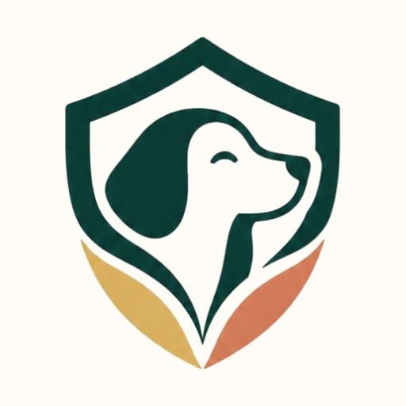

DogardiPrivacy policy
Last updated: [DATE]
Draft: this policy is being finalized before Dogardi launches.
Dogardi (“we”, “us”) is an app for looking after a dog with the people who help: routine and reminders, meals, a medical card, and a shared “pack”. This policy explains what we collect, why, who can see it, and the choices you have. Contact: support@dogardi.app. [Your legal name or company, and mailing address.]
What we collect
- Your account: your email address, name, phone number (if you add it) and profile photo (if you add one). Your password is handled by our sign-in provider; we never see it.
- Your dogs: what you enter about them, such as name, photo, breed, birthday, weight, microchip number, vet, allergies, medications, vaccines, vet visits and notes.
- Your plan and log: routine items, meals, to-dos, bookings, and what was logged, when and by whom.
- Your pack: who you invite, their roles and what they’re allowed to see, chat messages and photos you send, and reactions.
- Emergency info: emergency contacts (names and phone numbers you enter) and the emergency vet you pick.
- Settings: notification times, units and similar preferences, so they follow you to another phone.
We don’t use advertising trackers or sell your data. We don’t collect your location in the background. When you search for a nearby emergency vet, your phone’s location is used for that search only, with your permission.
How we use it
Only to run Dogardi: to keep your dog’s info in sync across your phones and your pack, to show reminders, to let a sitter see what you chose to share, and to answer support requests. Reminders are scheduled on your phone.
Who can see it
- Your pack: people you invite see your dog’s info according to the permissions you set (for example, a walker may see the routine but not the medical card). You can change permissions or remove someone at any time.
- Sitter links: when you make a sitter link, anyone with that link can see what you chose (today’s routine, house notes, medical info) plus your dog’s emergency info, your first name and phone number, until the link expires or you stop sharing. Logs made from the link show in your pack as the sitter’s name.
- Service providers who run parts of Dogardi for us, under contracts that limit their use of your data:
- Supabase (database, sign-in, photo storage), servers in the United States.
- Anthropic, only if you use a feature that reads text or photos with AI (for example, scanning a vaccine booklet). What you send is used to answer that request and isn’t used to train their models.
- Apple, to deliver notifications.
- The law: if we’re legally required to share information, or to protect someone’s safety.
Shopping links
Some product links go to Amazon. As an Amazon Associate we earn from qualifying purchases. Amazon’s own privacy policy applies on their site; we don’t receive your purchase details.
Keeping it and deleting it
We keep your data while you have an account. You can delete your account in the app (Profile → Account → Delete account); that permanently removes your account, your dogs, your plan, your photos and your pack, usually right away and always within 30 days. Messages you sent in someone else’s pack chat stay in that chat for them, but are no longer linked to your account. You can also ask us for a copy of your data at support@dogardi.app.
Security
Data is sent over encrypted connections, and the database only lets each person reach what their account or pack role allows. Sitter links use long random codes and stop working when they expire or you stop sharing.
Children
Dogardi isn’t meant for children under 13, and we don’t knowingly collect their information.
Your rights
Depending on where you live, you may have the right to access, correct, delete or move your data, or to complain to a privacy regulator. Write to us and we’ll help. [Add any region-specific wording, e.g. for Canada (PIPEDA), California or the EU, before launch.]
Changes
If we change this policy, we’ll update the date above and, for important changes, tell you in the app.